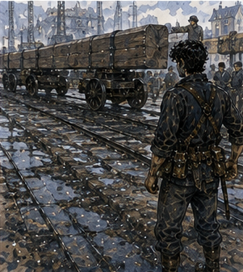

The north freight arch was built for carts that had become unreasonable. I liked it immediately. Two stone towers framed a passage wide enough for ordinary wagons to pass side by side. The problem was the overhead brace. Not the arch itself.
A timber maintenance bridge crossed between the towers above the road, carrying signal ropes, inspection hooks, and a narrow walkway for people with better judgment than me. Below it, freight entered Carrow. Most freight fit. Some freight had opinions. This morning's opinion was timber.

Long beams. Not especially heavy by freight standards. Long enough that turning them through the arch required everyone involved to agree about where the back end existed. That was apparently difficult. I arrived before first bell. The north arch clerk was already there. I knew her face from somewhere. Not name. She knew mine.
“Greg.”
“Yes.”
“Good.”
There it was. Not excitement. Relief. Small. Professional. I liked it. Dangerous. She handed me a white paddle and a red paddle. No yellow.
“White moves. Red stops.”
“Who owns the load?”
“Bram.”
A man beside the lead wagon raised two fingers. Broad shoulders. Gray cap. Probably fifty.
“Who owns the gate?”
“I do.”
“Who owns the turn?”
“Bram.”
“Who owns clearance?”
She pointed at me. I stopped.
“Actual clearance?”
“Final call before each wagon enters.”
That was more than the road job. Not much more. Enough.
“What am I checking?”
She pointed. Marks had been painted on the road. Two white lines before the arch. One at the turn. A chalk scale ran up the left tower.
“Load height against bridge. Rear swing against west post. Front corner against east bollard. If you cannot see all three, stop.”
“Who watches the rear swing?”
“You.”
“And the front corner?”
“You move.”
I looked at the geometry. Long timber. Slow wagon. Two critical points not visible from one place. Possible. Barely.
“Can I use a second person?”
“Yes.”
Good answer.
“Who?”
She pointed to a young man leaning against the wall with a coil of rope.
“Kell.”
Kell looked perhaps eighteen. Copper badge. Freight gloves. He straightened.
“I'm not climbing.”
“I didn't ask.”
“Good.”
The clerk said, “Kell watches front corner if you want him.”
“I want him.”
Kell came over. I handed him the white paddle. He looked at it.
“What do I do?”
“Nothing yet.”
He looked at the clerk. She said, “Greg has clearance.” There. Again. A bounded piece. Mine. Bram walked over.
“We've done this load twice.”
“Today?”
“No.”
“Same wagon?”
“Yes.”
“Same beam length?”
“Near enough.”
I looked at the load.
“Near enough isn't a measurement.”
Bram smiled.
“Good. You are the annoying one.”
“Apparently.”
He gave me the load sheet. Lengths. Heights. Axle width. Good. Not perfect. Useful. The longest beam extended well beyond the rear bed. The front ends were bound in a staggered stack. The wagon itself had a steerable front axle. Bram said, “First is shortest.”
“Why?”
“Because if your system is stupid, I'd rather learn on the easy one.”
Competent. I liked him. Kell said, “Encouraging.” We walked the path. Not theory. Feet. From holding line to turn mark. I stood where the rear swing would pass. Kell stood at the front corner. We could see each other. Good. I raised red. He raised white. Wrong.
“Match me unless you're stopping.”
“So if you're red, red.”
“Yes.”
“If you're white, white unless I see bad.”
“Yes.”
“Then red.”
“Yes.”
“What if I don't know?”
“Red.”
He nodded. Good. The clerk watched.
“Anything else?”
I looked up. The maintenance bridge had three hanging rope loops under it. One sat lower than the others. Not load-bearing. Signal rope. Still.
“Can that be tied up?”
She looked.
“Yes.”
A worker pulled it higher. Done. No one congratulated me. Excellent. First wagon. Bram drove. Another worker walked rear. Not controlling. Watching load bindings. I stood at the turn. Red. Wagon approached. Stopped. I checked height. Plenty. Rear swing line. Clear. Kell at front. He looked at me. I raised white. He raised white. Bram moved. Slow. The front axle turned. The long rear overhang swung toward the west post.
I walked with it. Not too close. Three feet. Two. Still clear. Kell raised red. I raised red immediately. Bram stopped. No question. Good. I looked forward. Couldn't see.
“Kell?”
“Bollard.”
“How much?”
“Hand.”
Bram called, “Can take more west.” I looked at rear. Could.
“Half wheel west.”
He adjusted. Kell watched. White. I checked rear. White. We moved. The wagon cleared. Nothing happened. Perfect. Bram stopped beyond the arch.
“Again?”
“Again.”
Second wagon longer. Same process. This time the rear swing came closer. I stopped it before Kell did. Bram adjusted. Clear. Third wagon had a different driver. Younger. Impatient. Of course. He rolled past the holding line before I raised white. I raised red. He stopped.
“I'm clear.”
“Not yet.”
“I can see it.”
“I can't.”
He looked at Bram. Bram said, “Greg has clearance.” The driver looked back at me. There it was. Not authority because I was Greg. Authority because the job had assigned it. Better. He waited. I checked. Kell checked. White. The driver moved. Clean. Fourth wagon was the longest. The load sheet said thirty-two feet. It looked longer. I checked. Not with magic.
With a marked rope the clerk kept in a box. Thirty-three and a little. I looked at Bram. He shrugged.
“Different cut.”
“Sheet says thirty-two.”
“Sheet is wrong.”
“Does that change the turn?”
“Yes.”
He said it without drama.
“Can it fit?”
“Yes.”
“How?”
“Wider entry. Later turn.”
I looked at the road. Wider entry put the front corner closer to the east bollard. Later turn put the rear farther from the west post initially, then increased swing later. Possible. I could model it. Roughly. Bram already had. Probably better.
“Show me.”
He walked it. Literally. Started where front wheel should enter. Turn point. Where rear would swing. Kell followed. We talked. No one moved the wagon. The clerk handled two ordinary carts through the other side of the arch while we did this. The city continued. I liked that. Bram said, “I can take the bollard close.”
“How close?”
“Four inches.”
Kell made a face.
“That's not close. That's touching with ambition.”
Bram laughed. I looked at the bollard. Stone. Fixed. Front wagon corner iron-banded. Four inches if everything behaved. Everything did not always behave.
“What changes if you take six?”
“Rear gets closer west.”
“How much?”
“Maybe two.”
West clearance looked better than east.
“Take six.”
Bram nodded. No argument. That felt good. Too good. I noticed. Did nothing with the noticing. We set. Red. Check. White. The wagon moved. Slow. Kell walked front. I walked rear. Six inches at bollard. Rear swing approached. Plenty. Then less. Then four inches. Three. I raised red. Bram stopped. The wagon settled. Wood creaked. Nothing else. I checked. Rear beam end was three inches from the west post.
Maybe less. The load had shifted? No. Not visibly. The road under the rear wheel dipped slightly. There. Not on the painted route. A shallow depression. Ordinary wear. Enough. Bram looked back.
“Need another inch forward.”
“If you go forward, rear swings closer.”
“Then I straighten first.”
I pictured it. Front wheel. Axle. Rear swing. Yes. Probably. Kell called, “Front has room.” I could authorize. That was the job. I also had another option.
“Back six.”
Bram looked at me.
“Why?”
“Reset before the dip. Straighten there.”
He considered. Then nodded. The young driver from before muttered, “Takes longer.” Bram said, “Then age slower.” I liked Bram. We backed. Reset. Straightened earlier. Moved again. This time rear cleared by five inches. Front cleared by six. Through. Nothing happened. I exhaled. Had I been holding breath? Probably. Kell grinned.
“Good?”
“Yes.”
He slapped the white paddle against his leg.
“Again?”
Two more wagons. Shorter. Easy. By the end I had a system. Not universal. This arch. These loads. This morning. Bram knew the wagons. Kell watched the front. I watched rear and height. The clerk controlled everything else. If uncertain, stop. Reset before forcing. It worked. That was the dangerous thing about good systems. They worked. At the end Bram signed the clearance sheet.
The clerk signed beneath him. Then handed it to me.
“Sign.”
I looked.
“Why?”
“You held clearance.”
I signed.
GREGORY.
No title. Good. She counted six copper into my hand.
“Two hours.”
It had been two hours and eleven minutes.
“Eleven extra.”
“Rounding.”
“In whose favor?”
“Yours today.”
I took the money. Kell said, “You coming next timber day?” The clerk answered before me.
“If he's available.”
Good. I liked her too. I walked away with six copper and a shoulder that felt pleasantly used from yesterday's sparring. The morning had gone exactly right. Not because nothing could have gone wrong. Because people stopped before small problems became large ones. That distinction mattered. I bought breakfast again. Second breakfast. Nineteen. Bread folded around sausage and cabbage. I ate while walking toward the market.
Gloves. I had written it down. Therefore it was apparently a plan. The glove seller had too many. Work gloves. Riding gloves. Thin leather. Heavy leather. Fingerless. Lined. Unlined. I tried six pairs. The seller became increasingly hostile.
“Those fit.”
“They bunch at the palm.”
“They're gloves.”
“Yes.”
“That happens.”
“It shouldn't.”
She stared. I tried another pair. Better. Soft leather. Reinforced at the base of the thumb. Not thick enough to ruin grip. I drew my sword halfway. The seller slapped the counter.
“No.”
“I need to test.”
“Not with steel.”
“Fair.”
She handed me a wooden dowel. I gripped. Turned. Changed angle. Good.
“How much?”
“Seven copper.”
Too much. Not impossible. Too much.
“Five.”
“Seven.”
“Six.”
“Seven.”
“You don't negotiate.”
“I do. I started at seven.”
I looked at the gloves. I wanted them. Not because they were interesting. Because I expected to use them. Roads. Warehouse. Pell. Sparring maybe. Work next week. And the week after. Future.
“Six and I tell everyone you're generous.”
“Eight if you lie about me.”
I laughed.
“Seven.”
I paid. They were mine. I put them on. Good. Very good. The seller looked at my face.
“Don't smile. Makes me think I charged too little.”
I stopped smiling. Mostly. I had time before Pell. This was another problem. Unscheduled time. I considered the Guild. No. Antonius. Absolutely not. Edrin. No. Varo. No. I could go home. I could find Jorren. I could see if Sevren had invented another ladder. I could train. Hand felt good. Shoulder slightly sore. No. I walked toward the river. Again. This was becoming a habit.
At the low wall, someone had left chalk marks from a children's game. Squares. Numbers. I knew the game. Probably. I stepped over them. A girl shouted from behind me.
“You lost.”
I turned. Three children stood ten feet away. One pointed at my boot.
“You stepped on line.”
“I wasn't playing.”
“You stepped on line.”
“That is not consent.”
They stared. The oldest said, “Scared.” I looked at the squares. Then at them. This was absurd. I put my sword belt on the wall.
“Explain rules.”
They did. Poorly. I lost. Badly. Apparently you had to throw a flat stone into numbered squares, hop without touching lines, retrieve it, and return. Balance. Timing. Precision. Easy. No. The children were better. My body was fast. That did not make it practiced at children's pavement games. I touched a line. They screamed. I disputed. They screamed louder. A dock worker passing by said, “Line.”
Betrayal. Second attempt better. Third I made it through. The youngest child accused me of long legs.
“That's not cheating.”
“It is if you have them.”
Unanswerable. I played until I won once. Then stopped. Important. The oldest said, “Again.”
“I have work.”
“Scared.”
“Yes.”
I put my sword back on. My new gloves were dusty. Excellent. I reached Pell's workshop early. He looked at the gloves.
“You bought gloves.”
“Yes.”
“Why?”
“Hands.”
Vessa looked over.
“Growth.”
“Everyone needs a new word.”
The second regulator body was already open. Not dramatically. Pieces arranged on cloth. Housing. Spring. Seat. Seal. Two small washers. Pell had cleaned nothing. Good. Evidence. I leaned over. No obvious break. No melted seal. No cracked spring. The seat showed a bright crescent on one side. I stopped.
“There.”
Pell nodded.
“Maybe.”
Vessa handed me a magnifying lens. I looked. The bright mark was wear. Uneven. Not huge. One side of the seat had been contacting harder.
“Off-center.”
“Maybe,” Pell said.
“You can see it.”
“I can see wear.”
Right. Cause versus evidence.
“Could be seat alignment.”
“Yes.”
“Could be spring pressure.”
“Yes.”
“Could be housing tolerance.”
“Yes.”
“Could be field mount loading the body.”
“Yes.”
“Same mount didn't affect first body.”
“Not visibly in one test.”
Annoying. Correct. Vessa was holding the housing. She rolled it between her fingers.
“Here.”
“What?”
She pointed to the threaded outer collar. One section had a faint burr. Tiny. I would have missed it. Pell took the lens.
“Hm.”
I hated hm.
“What?”
“Thread catches.”
He screwed the collar in slowly. Half turn. Smooth. Another. Tiny resistance. Then smooth. Again. Same place.
“Could pull the seat sideways when tightened,” I said.
Pell did not answer. He assembled without spring. Tightened. Opened. Looked.
“Maybe.”
Vessa said, “Customer wrench.” Pell looked at her.
“What?”
“Maret's people tighten harder than you.”
“How do you know?”
“They tighten everything harder than you.”
“That isn't measurement.”
“No. It's experience.”
Good. Pell reassembled. Used a longer wrench. Not absurd. Firm. Opened again. The seat had shifted slightly. Maybe. I leaned closer.
“Again.”
Pell looked at me. Not correction. Question. I answered myself.
“Your call.”
He did it again. Same. Small shift. There. Not solved. But something. Pell sat back.
“Thread burr plus torque can bias the seat.”
“Can,” I said.
Vessa smiled.
“Growth.”
“Fuck off.”
Pell ignored us.
“Does that explain hot click?”
“No.”
“Flutter?”
“Maybe.”
“Recovery while hot?”
“No.”
“Then not solved.”
Good. Mundane defect. Partial mechanism. Not everything. I liked this.
“Can you remove burr?”
“Yes.”
“Will you?”
“Yes.”
“Then retest?”
“Yes.”
“When?”
“Tomorrow.”
I opened my mouth. Pell looked at me. I closed it. He smiled.
“After midday.”
“I have nothing after midday.”
“That wasn't an invitation.”
I stared. Vessa laughed. Pell continued.
“Customer needs the first body back. I'm taking this one to Maret after bench check. If it behaves, she runs it. You don't need to be there.”
There. Not needed. I felt the small disappointment. Then something else. Relief? Maybe.
“What do you need from me?”
“Nothing.”
“Then why did you tell me after midday?”
“You asked when.”
Right. I was becoming unbearable. Vessa handed me a cup of water.
“Sit.”
I sat. Pell began dressing the burr with a fine file. Small strokes. Physical. Patient. I watched. Not because I was needed. Because I wanted to. That was allowed. After a minute Vessa said, “You get paid this morning?”
“Yes.”
“How much?”
“Six.”
“Good.”
“Why?”
“You bought gloves.”
“They were seven.”
“Bad.”
“I like them.”
She looked at the gloves.
“Then good.”
This was an unusually sophisticated economic model. Pell kept filing. I watched the metal. No magic. No experiment. No attempt to accelerate. When he finished, he cleaned the threads and reassembled. Smooth. Better. Not proof. He set the regulator aside.
“Tomorrow.”
I nodded. Then did not ask if I could come. Pell noticed. Of course.
“You can stop making the face.”
“What face?”
“The one where you're proud of not asking.”
I hated him. Vessa said, “Growth.” I stood.
“I'm leaving.”
“Good.”
Outside, afternoon light had gone yellow. I had no work left. No obligations. This time I did go home. Mostly because I wanted to put the gloves somewhere safe before wearing them to death. The wooden horse received them poorly. I put them beside it. Then moved the horse on top of one glove. Better. Terrible display. Mine. Someone knocked. I opened the door.
Alden. Sweaty again. Dark-red scarf loose.
“What?”
“Next week.”
I stared.
“What next week?”
“Same day. Second bell.”
Sparring.
“Yes.”
He nodded. Then looked past me.
“What is that?”
“Horse.”
“No.”
“It is.”
“That's not a horse.”
“Fuck you.”
He picked it up. I nearly told him not to. Stopped. He turned it over.
“Three copper?”
“How do you know?”
“You paid three copper for this?”
“How do you know?”
He laughed.
“Market man has six of them.”
“Six?”
“Different animals.”
I had made a terrible mistake.
“What animals?”
“Goat. Dog. Something he says is a lion.”
I wanted the lion. No. Absolutely not. Alden saw my face.
“Oh no.”
“Shut up.”
“You want another.”
“No.”
“You do.”
“I have plans.”
“For the horse?”
“For money.”
He put the horse back.
“Next week.”
“Second bell.”
“Don't be early.”
“I will be early.”
“I know.”
He left. I closed the door. Next week. There it was again. I took out my notebook. NORTH ARCH:
long timber
clearance system worked
Kell front, me rear/height
uncertain = stop
reset before forcing
fourth load sheet wrong by ~1 ft
actual load still cleared after route adjustment I paused.
Then added:
DO NOT GENERALIZE FROM ONE ARCH.
Good. PELL:
second body seat wear uneven
thread burr
higher tightening torque can bias seat
does not yet explain full hot behavior
Pell correcting + retesting
Then:
NEXT WEEK:
Alden, second bell
Then:
GLOVES:
good I stared at that. Useful record. I closed the notebook. Tomorrow had no job with my name on it. Not yet. That was fine. The gloves would still be there. Pell would still have a regulator. Alden would still expect me next week.
The north arch would move freight whether I was standing under it or not. I liked all of those things. Especially the last one.